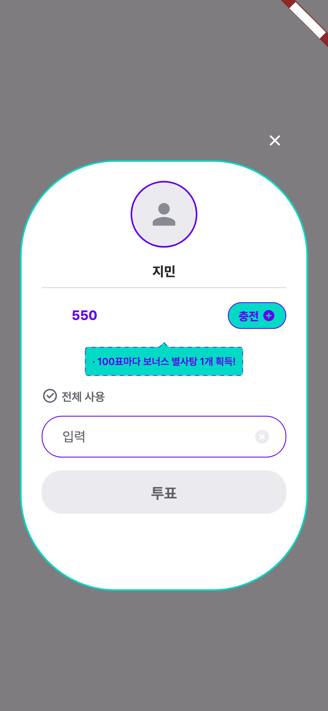
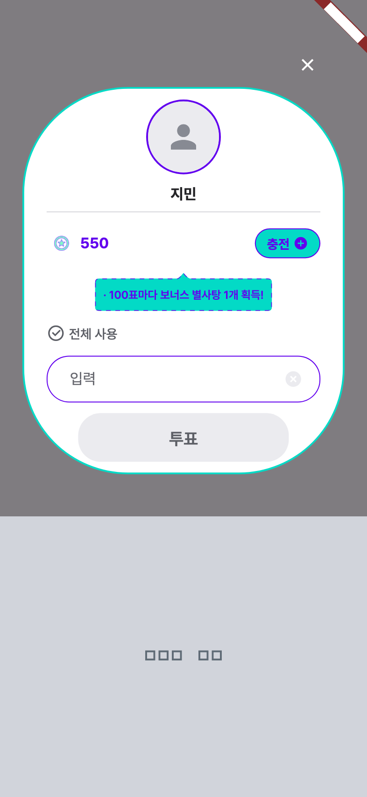
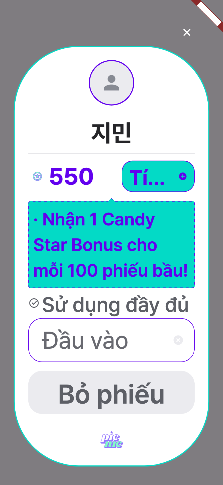
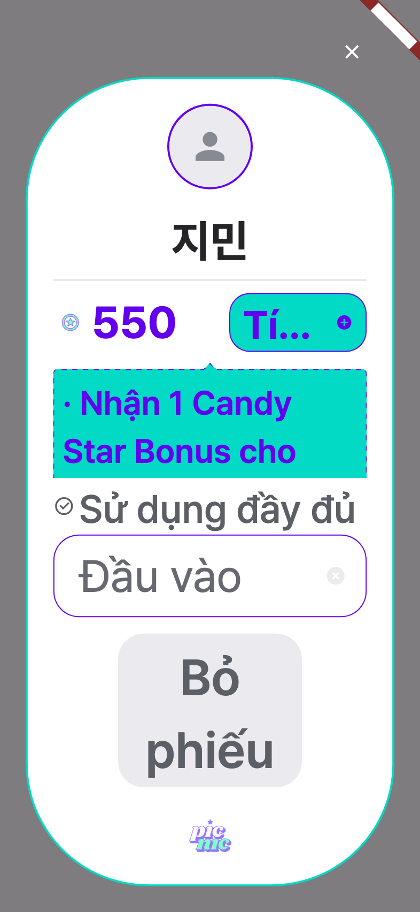
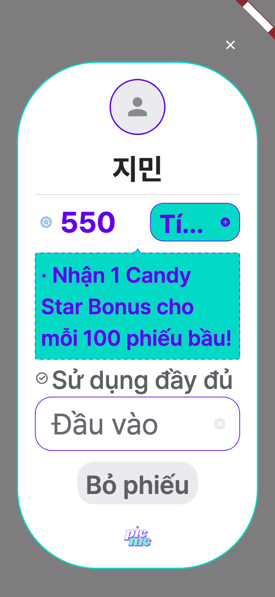
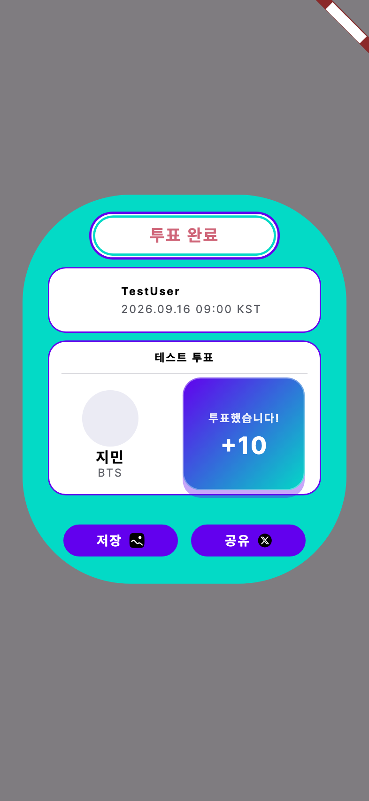
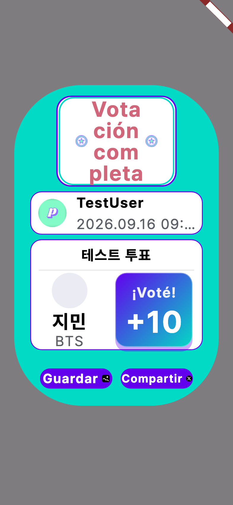
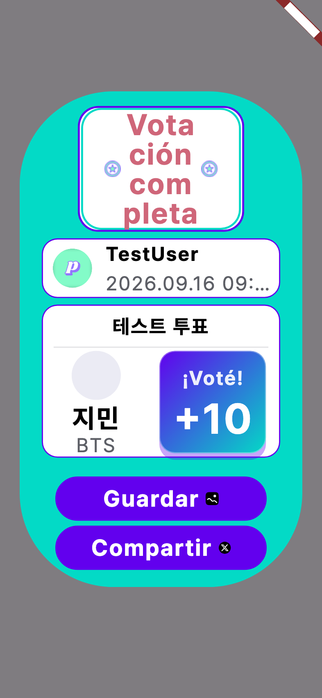
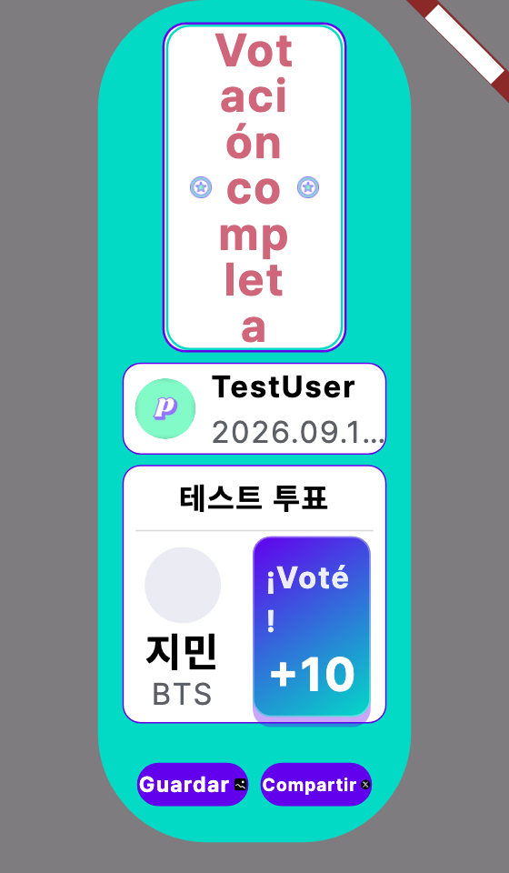
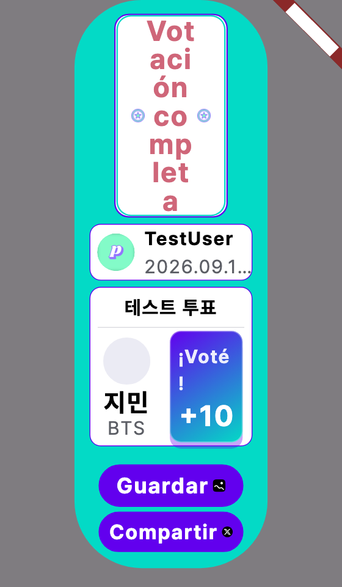

2026-09-20 · 모든 이미지는 목업이 아니라 앱 코드를 실제로 렌더한 결과다(393×852, 프로덕션 폰트 Pretendard). 시안 A2·A3·B2 는 프로토타입 패치를 임시로 적용해 캡처한 뒤 되돌렸다.
정할 것은 세 가지다. ① 투표 버튼 폭(A1·A2·A3) ② 저장·공유 버튼 배치(B1·B2) ③ 로케일 테스트 범위(옵션 1·2·3). 각 절 끝의 보라색 상자에 권고를 적었다.
운영 DB 의 user_profiles.language 를 최근 30일 로그인 기준으로 집계했다(읽기 전용, 2026-09-20).
| 앱 언어 | 전체 가입 | 최근 30일 | 비중 | 누적 |
|---|---|---|---|---|
| 한국어 ko | 28,024 | 5,836 | 79.3% | 79.3% |
| 영어 en | 81,378 | 1,113 | 15.1% | 94.4% |
| 인도네시아어 id | 937 | 201 | 2.7% | 97.1% |
| 베트남어 vi | 317 | 124 | 1.7% | 98.8% |
| 타이어 th · 중국어 zh | 320 | 44 | 0.6% | 99.4% |
| 일본어 ja · 스페인어 es · zh-TW | 552 | 39 | 0.5% | 99.9% |
| 필리핀어 · 버마어 my · 벵골어 bn | 119 | 1 | 0.0% | 100% |
네 개 언어(ko·en·id·vi)가 활성 사용자의 98.8% 다. 이번에 가장 많은 공을 들인 버마어·벵골어는 최근 30일 활성 사용자가 0명이다.
이번 세션 수치에 대한 주의. 테스트는 Pretendard 만 로드한다. 한글·라틴 문자는 실제 글리프로 재지만, 타이어·버마어·벵골어는 테스트에서 "모든 글자가 정사각 상자" 인 대체 폰트로 재진다. 실제 기기에서는 결합 문자가 폭을 차지하지 않으므로 라벨이 더 좁다. 즉 앞서 보고한 "벵골어 0.569배" 같은 수치는 실제보다 나쁘게 나온 상한이다. 넘침을 막는 방향으로는 안전한 오차지만, 그 언어들의 글자 크기 수치를 그대로 믿으면 안 된다. 그래서 아래 시안은 실제 글리프로 그려지는 한국어·영어·베트남어·스페인어만 썼다.
PICNIC-2700 은 버튼이 7줄까지 자라던 결함을 고치면서 버튼 폭 정책까지 바꿨다. 세 시안 모두 "라벨은 최대 2줄" 이라는 안전장치는 같고, 폭과 긴 라벨 처리 방식만 다르다.






베트남어 2.0배 비교는 A1_vi_2.0_idle.png · A2_vi_2.0_idle.png · A3_vi_2.0_idle.png, 영어는 *_en_1.0_idle.png 에 있다.
| A1 넓은 버튼 (현재) | A2 고정 + 말줄임 | A3 고정 + 자동 축소 | |
|---|---|---|---|
| 원래 디자인과의 일치 | 다르다 (알약 → 바) | 같다 | 같다 |
| 키보드 전환 시 크기 변화 | 23% 줄어듦 | 없음 | 없음 |
| 2.0배까지의 잘림 | 없음 | 없음 (4개 언어가 2줄) | 없음 |
| 2.0배 초과 잘림 | 없음 | my·vi 말줄임 | 없음 (대신 작아짐) |
| 코드 복잡도 | 모서리 여유 계산 루프 필요 | 가장 단순 | 단순 + 축소 한 겹 |
| 되돌리는 비용 | — | 한 줄 | 몇 줄 |
라벨이 고정 크기 버튼에 안 들어갈 때 어떻게 할지다. 라벨이 들어가는 언어(한국어·영어 등)는 두 시안이 완전히 같다.






스페인어 1.0배 비교는 B1_es_393_1.0.png · B2_es_393_1.0.png.
| B1 라벨 축소 (현재) | B2 세로 쌓기 | |
|---|---|---|
| ko·en·id·vi (98.8%) 에서의 모양 | 기존 그대로 | 기존 그대로 |
| 긴 라벨 가독성 | 작아진다 | 요청한 크기 그대로 |
| 공유 이미지 구도 | 일정 | 언어에 따라 팝업 높이가 달라진다 |
| 영향 범위 | 이미 적용됨 | 공용 위젯이라 여섯 화면 전부 재검증 |
시안을 만들다 보인 기존 결함. 위 스페인어 2.0배 이미지에서 머리말 "Votación completa" 가 단어 중간에서 끊겨 네 줄이 된다(Vota / ción / com / pleta). 머리말 알약 폭이 203 으로 고정이라서다. 시안 A 의 베트남어 2.6배 이미지에서는 충전 버튼이 Tí… 로 잘리고 안내 말풍선이 두 줄에서 끊긴다. 둘 다 이번 결정과 무관한 기존 문제이고 아직 티켓이 없다.
PICNIC-2727 에서 129 조합 중 59 조합이 한 번도 검증되지 않은 채 있었다. 여러 화면의 테스트에 로케일 축이 아예 없기 때문이다. 메우는 방법은 "어떤 언어로" 와 "어느 화면까지" 두 축의 조합이다.
| 옵션 | 언어 | 잡는 것 | 못 잡는 것 | 테스트 증가 |
|---|---|---|---|---|
| 1. 사용자 기준 | ko·en·id·vi | 활성 사용자 98.8% 가 실제로 보는 화면 | 앞으로 들어올 긴 번역 | 기준 (×1) |
| 2. 사용자 기준 + 최장 문자열 권고 | ko·en·id·vi + 가상의 "최장" 로케일 1개 | 옵션 1 전부 + 어떤 언어든 가장 긴 번역이 들어왔을 때 | 특정 문자 체계 고유의 문제(결합 문자 등) | ×1.25 |
| 3. 전 로케일 14개 | arb 파일이 있는 전부 | 모든 언어 조합 | — (단, 아래 주의 참고) | ×3.5 |
"최장 문자열 로케일" 이란 번역 키마다 14개 언어 중 가장 긴 값을 골라 모은 테스트 전용 가상 언어다. 실제 언어가 아니라 "최악의 길이" 를 한 번에 재는 장치다. 14개 언어를 다 돌리지 않고도 길이 문제는 전부 잡는다.
옵션 3 의 함정. 위에서 밝힌 대로 타이어·버마어·벵골어는 테스트에서 상자 폰트로 재진다. 14개를 다 돌려도 그 언어들은 실제 글리프가 아니라 과대 측정된 상자를 재는 셈이다. 제대로 하려면 Noto 폰트 3종을 테스트 자산으로 추가해야 하고(수 MB), 그래도 활성 사용자는 1% 미만이다.
| 범위 | 대상 | 근거 |
|---|---|---|
| 가. 고정 크기 상자만 권고 | 번역 문자열이 고정 폭·고정 높이 상자 안에 들어가는 위젯을 먼저 전수 조사해 그것만 | 이번 세션의 결함 10여 건이 전부 이 형태였다. 자유롭게 늘어나는 텍스트는 넘치지 않는다 |
| 나. 핵심 화면 | 홈·투표 목록·투표 상세·투표 팝업 2종·상점 | 사용 빈도 기준. 조사 없이 바로 착수 가능 |
| 다. 전체 | 위젯 테스트가 있는 모든 화면 | 가장 넓지만 대부분은 넘칠 구조가 아니라 낭비가 크다 |
세 결정을 기호로 답하면 된다. 예: A3, B1, 옵션 2 × 가. 권고대로라면 "권고대로" 한마디면 된다.